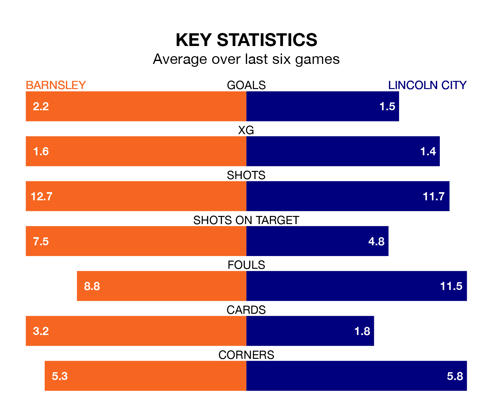

Barnsley face a challenge to maintain their high-scoring form at home against a tight Lincoln City defence on Saturday.
With 66 goals in 35 games, Barnsley are the second-highest scorers in EFL League One ahead of the 3pm kick-off at Oakwell.
They face an Imps side who have scored 40 in 36 matches, but conceded only 32 goals, putting them second among the league's tightest defences – only Portsmouth have conceded fewer goals.
In Devante Cole, Barnsley have one of the league's sharpest shooters so far this season. He has notched 17 goals in 35 appearances, to sit second in the scoring charts.
His goal rate of one every 173 minutes is quicker than that of Recco Hackett-Fairchild, Lincoln's top scorer with a goal every 262 minutes, and a total of six goals in 21 games.
The Tykes are fourth in the table after 35 games, of which they have won 19 and drawn 10, earning 67 points.
City are six places behind the home side in 10th, with 13 wins and 13 draws putting them on 52 points.
Barnsley are in good form in EFL League One, with four wins and two draws from their last six games.
And also with four wins and two draws over that period, the Imps' form is identical – they have both taken 14 points from 18.
In the last five years, Barnsley and Lincoln have played each other on four occasions. Lincoln won two of them and they drew twice.
On average, the Tykes scored 0.5 goals and the Imps 1.5 in those matches.
Their last meeting was on November 25, when they played out a 2-2 draw.
Barnsley's last match was on Tuesday, a 2-2 draw against Bolton Wanderers, with Donovan Pines and John Mcatee getting the goals for the Tykes.
Lincoln drew 0-0 with Stevenage last time out, on March 2.
Updated: 09:34 (UTC), 08/03/24